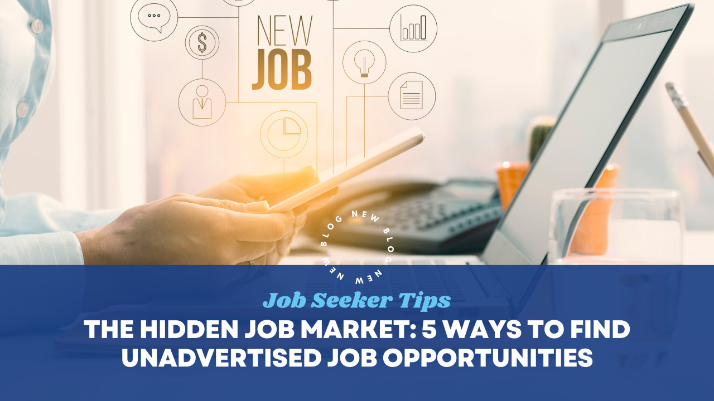
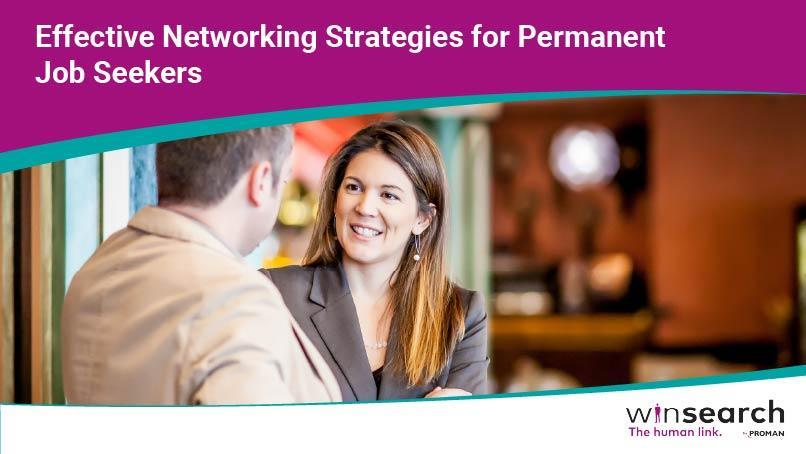
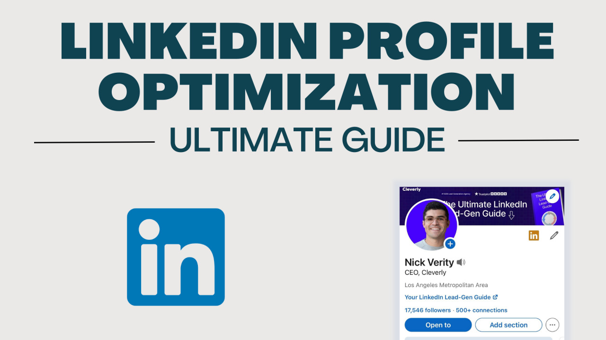
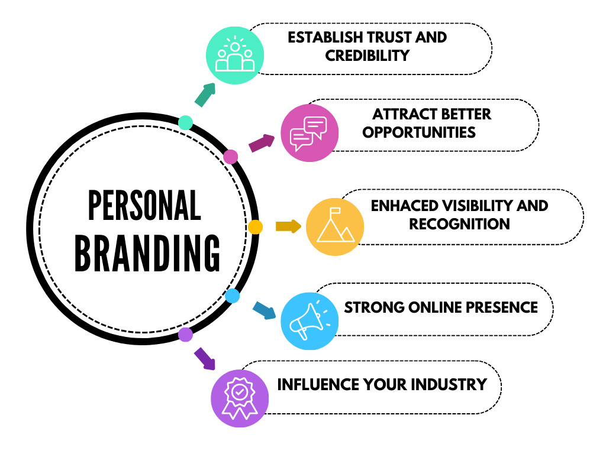

Picture this: You're spending hours scrolling through job boards, tailoring your resume for the hundredth time, and clicking "submit" on applications that seem to vanish into a digital void. Meanwhile, your former colleague just landed their dream role at a Fortune 500 company—and the position was never even advertised. Sound frustrating? It should also sound like an opportunity.
Welcome to the hidden job market, where an estimated 70-85% of job openings are filled without ever appearing on traditional job boards. Yes, you read that correctly. The vast majority of positions are secured through channels most job seekers never tap into. But here's the good news: once you understand how this parallel universe of employment works, you'll have access to opportunities your competitors don't even know exist.
What Exactly Is the Hidden Job Market?
The hidden job market refers to job openings that are filled through internal promotions, employee referrals, direct applications, networking connections, and recruiter placements—all before a company ever publishes a job posting online. Think of it as an exclusive club where the most coveted positions are quietly filled among insiders who know the right people and use the right strategies.
But why do companies operate this way? There are several compelling reasons:
- Cost and time efficiency: Posting jobs publicly, screening hundreds of unqualified candidates, and conducting extensive interview rounds is expensive and time-consuming. Internal referrals and direct hires drastically reduce these burdens.
- Quality of candidates: Referred candidates typically perform better and stay longer because they come pre-vetted by trusted employees who understand the company culture.
- Competitive advantage: Some companies prefer to keep strategic hires confidential, especially for sensitive positions or expansion plans they don't want competitors to know about.
- Reduced risk: Hiring someone who comes recommended or who has already demonstrated interest in the company feels safer than gambling on an unknown applicant from a job board.
Understanding these motivations is your first step toward cracking the code. Now, let's dive deep into the proven strategies that will transform you from a passive applicant into an active opportunity creator.
1. Master the Art of Strategic Networking

Let's dispel a common misconception right away: networking isn't about being fake, pushy, or collecting contacts like baseball cards. Authentic networking is about building mutually beneficial relationships based on genuine interest and value exchange. When done correctly, it becomes your most powerful career development tool.
The Informational Interview: Your Secret Weapon
Informational interviews are criminally underutilized by job seekers, yet they're one of the most effective ways to access the hidden job market. Here's why they work: instead of asking for a job (which makes people defensive), you're asking for advice (which makes people feel valued).
How to execute the perfect informational interview:
Start by identifying 10-15 professionals working in roles or companies that fascinate you. Use LinkedIn, industry directories, alumni databases, or even thoughtful cold outreach. Craft a concise, personalized message that demonstrates you've done your homework. Mention a specific article they wrote, a project they led, or a career transition that impressed you.
Request just 15-20 minutes of their time—and mean it. Prepare 5-7 thoughtful questions that show genuine curiosity about their career journey, industry insights, and advice for someone in your position. Questions like "What skills do you think will be most valuable in this field over the next five years?" or "What do you wish you'd known when you were transitioning into this role?" tend to spark engaging conversations.
Here's the magic: when you approach these conversations with authentic curiosity rather than a hidden agenda, people naturally want to help you. They remember you. And when a relevant position opens up in their network three months later, guess whose name comes to mind?
After the interview, the real work begins: Send a thoughtful thank-you note within 24 hours. Reference specific advice they shared and explain how you plan to implement it. Stay in touch periodically—share an article they might find interesting, congratulate them on career milestones, or update them on your progress. You're building a relationship, not conducting a transaction.
Activate Your Dormant Network
Your existing network is sitting on unrealized potential. That college roommate? She might now be a hiring manager. Your former colleague from three jobs ago? He could have insider knowledge about expansion plans at his company.
The key is reactivation without awkwardness. Don't message people out of the blue asking for jobs—that's a surefire way to get ignored. Instead, reconnect authentically. Comment on their LinkedIn posts. Congratulate them on promotions. Share an article relevant to their work with a personalized note.
Once you've re-established rapport, you can casually mention, "I'm exploring new opportunities in [field/role] and would love to learn about your experience at [Company]." This approach feels collaborative rather than transactional.
LinkedIn: Your 24/7 Networking Platform

LinkedIn isn't just a digital resume—it's a dynamic networking ecosystem where relationships are forged and opportunities emerge daily. But most people use it passively, missing its transformative potential.
Connection strategies that work:
When sending connection requests, always—and I mean always—personalize your message. Generic requests get ignored. Instead, try: "Hi Sarah, I came across your article on supply chain innovation and found your insights on AI integration fascinating. I'm also working in logistics and would love to connect and learn from your experience."
Engagement is everything:
Don't just scroll through your feed—actively engage. Comment thoughtfully on posts from people in your target industry. Share relevant articles with your own insights added. This visibility keeps you top-of-mind and positions you as someone engaged in your field.
Strategic follows:
Follow not just companies you're interested in, but also their executives, hiring managers, and employees in departments you're targeting. This gives you insight into company culture, challenges, and priorities—intelligence you can leverage in conversations and applications.
2. The Direct Approach: Targeting Companies Before They're Hiring
Here's a truth that will change your job search: companies don't always know they're hiring until the right candidate appears. Your perfectly timed, compelling outreach might create a position that didn't formally exist.
Research Like an Investigative Journalist
Before reaching out to any company, you need to become an expert on their business, challenges, and trajectory. Study their recent press releases, annual reports, LinkedIn company page, and news coverage. What markets are they expanding into? What products just launched? What challenges is their industry facing?
This research serves two purposes: it helps you identify where you can add value, and it demonstrates genuine interest when you make contact.
Craft Irresistible Outreach
Generic cover letters die in inboxes. Value-driven outreach gets responses.
Instead of "I'm interested in marketing positions at your company," try something like:
"I noticed [Company] recently expanded into the European market. Having led successful market entry campaigns for three B2B SaaS companies, I've developed a repeatable framework for building brand presence in new territories with limited budgets. I'd love to share some ideas specific to your expansion that could accelerate your customer acquisition timeline."
See the difference? You've demonstrated awareness of their business, highlighted relevant expertise, and offered immediate value. Even if there's no open position, you've started a conversation.
Identify the Right Contact
Sending your outreach to "info@company.com" or "careers@company.com" is essentially sending it to nowhere. You need to reach actual decision-makers.
Use LinkedIn to identify the hiring manager for your target department. If you can't find that, reach out to someone currently doing the job you want and ask for an informational interview. During that conversation, you might ask, "If someone with my background wanted to explore opportunities at [Company], who would be the best person to speak with?"
The Follow-Up Formula
If you don't hear back after your initial outreach, don't assume it's a rejection. Hiring managers are drowning in emails and competing priorities.
Wait 7-10 days, then send a brief, friendly follow-up: "Hi [Name], I wanted to bump my previous message to the top of your inbox in case it got buried. I'm still very interested in discussing how my experience in [area] could support [Company's] goals in [specific initiative]. Would you have 15 minutes next week for a brief conversation?"
Persistence demonstrates genuine interest, but don't cross into pestering—two follow-ups maximum.
3. Build a Personal Brand That Attracts Opportunities

The most successful job seekers don't just find opportunities—they create magnetic personal brands that make opportunities find them. In today's digital landscape, your online presence is working for you 24/7, either opening doors or leaving them closed.
LinkedIn Profile Optimization: Beyond the Basics
Your LinkedIn profile isn't a resume uploaded to the cloud—it's a dynamic showcase of your professional identity and value proposition.
The headline matters more than you think:
Most people waste this prime real estate with generic titles like "Marketing Professional" or "Seeking New Opportunities." Instead, use it to communicate your value: "B2B SaaS Marketing Leader | Driving 300%+ Pipeline Growth Through Data-Driven Demand Gen | Ex-Salesforce."
Your summary is your story:
Don't just list what you've done—explain who you help, how you help them, and what makes your approach unique. Write in first person, use short paragraphs, and include a clear call-to-action at the end (like "Open to consulting on go-to-market strategy—message me to connect").
Rich media makes you memorable:
Add presentations, portfolio pieces, case studies, certifications, and recommendations. Profiles with media get significantly more engagement.
Content Creation: Establish Thought Leadership
Here's where many professionals hesitate, thinking "I'm not an influencer" or "I don't have anything unique to say." Wrong. You have insights from your specific experience that others would find valuable.
Start small: share one thoughtful post per week on LinkedIn. It could be a lesson learned from a recent project, a trend you're observing in your industry, or your take on a recent industry development. Authenticity beats polish—people connect with real experiences, not corporate-speak.
Guest posting amplifies your reach:
Identify industry blogs, publications, or newsletters that accept submissions. A well-placed article positions you as an expert and dramatically expands your visibility beyond your immediate network.
Build your own platform:
Consider starting a simple professional blog or portfolio website. When someone googles your name (and hiring managers definitely will), you want them to find a robust professional presence that reinforces your expertise.
Strategic Engagement: Be Seen in the Right Places
Visibility matters. Join LinkedIn groups relevant to your industry and target roles—but don't just lurk. Answer questions, share resources, and contribute to discussions. The same goes for industry-specific forums, Slack communities, and online professional associations.
When you consistently add value in these spaces, people start recognizing your name. Eventually, that recognition translates into "Hey, we have an opening and I immediately thought of you."
4. Leverage Recruiters as Strategic Partners
Recruiters get a mixed reputation among job seekers—some swear by them, others feel they're only interested in quick placements. The truth is, the right recruiter relationship can be transformative, while the wrong one wastes everyone's time.
Find Recruiters Who Specialize in Your Niche
Not all recruiters are created equal. The executive search firm specializing in C-suite finance roles won't be helpful if you're a mid-level marketing manager. You need recruiters who live and breathe your industry and level.
Where to find them:
Search LinkedIn for recruiters listing your industry and role type in their profiles. Check who's posting jobs in your field. Ask colleagues who they've worked with successfully. Industry associations often maintain preferred recruiter lists.
Evaluate the fit:
Before committing to work with a recruiter, have an exploratory conversation. Do they understand your career goals? Do they have active relationships with companies you're interested in? Are they responsive and professional? You're looking for quality over quantity.
Build Genuine Relationships, Not Transactional Connections
The best recruiter relationships are long-term partnerships. Even when you're not actively searching, maintain periodic contact. Update them on career developments, new skills, or changing goals. Share relevant industry news. Congratulate them on placements.
When you do need them, they'll be invested in your success because you've already established mutual value.
Be the candidate recruiters remember:
Make their job easier by being responsive, prepared, and realistic. Show up to interviews they arrange, provide feedback afterward, and understand that they're balancing multiple relationships. Recruiters remember—and prioritize—candidates who make them look good.
Understand the Recruiter's Motivation
Recruiters typically get paid when they successfully place a candidate, which means they're incentivized to fill positions quickly. This can work in your favor (they're highly motivated to help you), but it also means they might push roles that aren't perfect fits.
Be clear about your non-negotiables and ideal criteria. A good recruiter will respect your boundaries and focus on truly suitable opportunities rather than wasting both your time.
5. Embrace the Power of Professional Associations and Industry Events
While we've covered networking broadly, professional associations and industry events deserve special attention as hidden job market goldmines.
Industry Events: Where Opportunities Materialize
Conferences, trade shows, seminars, and workshops aren't just learning opportunities—they're concentrated networking environments where hiring managers, recruiters, and industry leaders gather.
Maximize your conference ROI:
Before attending, research the attendee list and speakers. Identify 5-10 people you specifically want to connect with and reach out in advance: "I saw you're speaking at [Conference]. I'm particularly interested in [topic]. Would you have time for a quick coffee during the event?"
During the event:
Don't just attend sessions—work the breaks, lunches, and social hours. Ask thoughtful questions during panels that demonstrate your expertise. Follow up with everyone you meet within 48 hours while the connection is fresh.
Professional Associations: Your Career Insurance Policy
Joining industry-specific professional associations provides ongoing access to job boards often exclusively shared with members, mentorship programs that fast-track relationship building, and volunteer opportunities that showcase your skills while expanding your network.
Many associations offer committee roles or working groups. Volunteer for these—they position you as committed to the field and put you in regular contact with industry leaders who might become your next boss or champion.
The Mindset Shift That Changes Everything
Accessing the hidden job market requires a fundamental shift from passive job seeker to active career strategist. You're no longer waiting for the perfect job posting to appear—you're cultivating relationships, demonstrating value, and creating opportunities before formal positions even exist.
This approach demands more upfront effort than simply submitting online applications. But the payoff is exponentially greater: better-fit roles, often with higher compensation, less competition, and faster hiring processes.
Start today with these three actions:
- Send three personalized LinkedIn connection requests to people in companies or roles that interest you.
- Identify five companies you'd love to work for and begin researching their recent developments, challenges, and key players.
- Commit to sharing one piece of valuable content on LinkedIn this week—a lesson learned, an industry observation, or a helpful resource.
The hidden job market isn't actually hidden—it's just accessed differently than traditional job boards. Master these strategies, commit to consistent relationship-building, and you'll unlock a world of opportunities that most job seekers never even know exists. Your dream role might not be posted online, but with the right approach, it's absolutely within reach.
The question isn't whether the hidden job market exists—it's whether you're ready to tap into it. The doors are there. Now you have the keys.